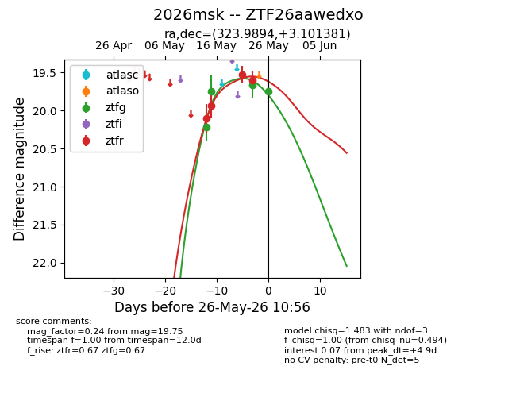
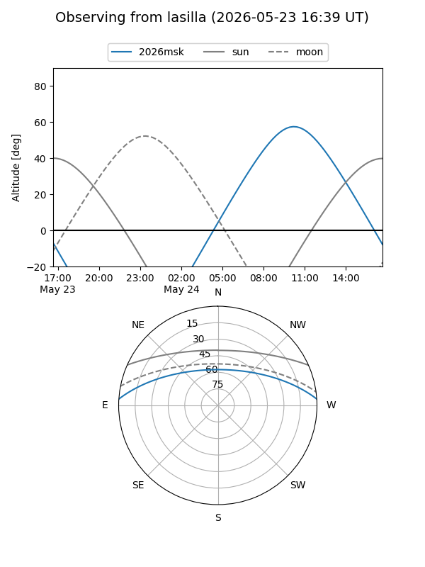
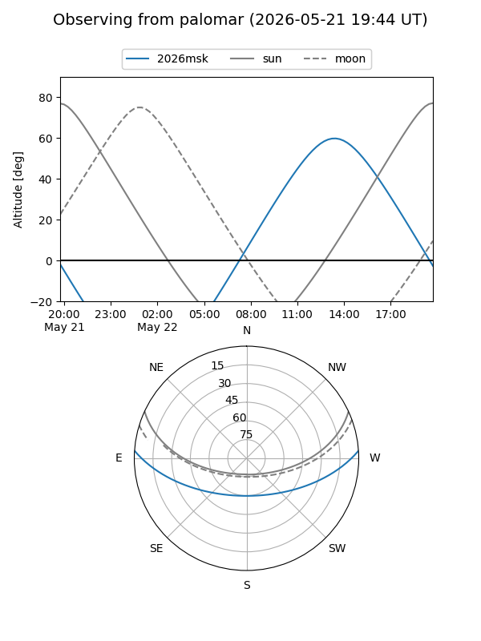
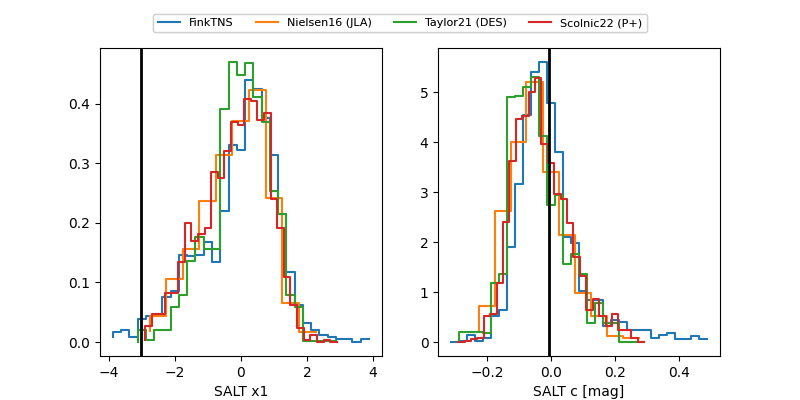

2026msk
Target 2026msk at 2026-05-26 10:58
Aliases and brokers:
lsst-FINK: link
lsst-Lasair: link
lsst-ALeRCE: link
ztf-FINK: link
ztf-Lasair: link
ztf-ALeRCE: link
TNS: link
YSE: link
alt names
ZTF26aawedxo (ztf,fink_ztf)
2026msk (tns,yse)
Coordinates:
equatorial (ra, dec) = 323.9894,+3.10138
equatorial (HMS+DMS) = 21:35:57.46,+03:06:04.97
galactic (l, b) = (57.7393,-34.04743)
Flags:
Photometry:
last ztfg=19.75, ztfr=19.60
4 ztfg, 4 ztfr detections
Lightcurve

Visibility


Additional plots
